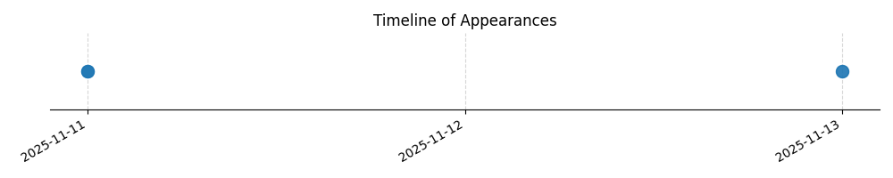

Kategorie: Letecké předpisy
Pravidlo přednosti v provozu (Right-of-Way Rules) v letectví, které je součástí leteckých předpisů, stanoví, že letadlo, které má právo přednosti, musí udržovat kurz a rychlost. Tím dává druhému letadlu jasně najevo, že se mu vyhýbá a umožňuje mu provést bezpečné vyhýbací manévry. Zpomalení nebo zatáčka by mohly vést k nejednoznačnosti nebo dokonce k nebezpečné situaci, zatímco udržování výšky je také důležité, ale primárním principem je udržení směru a rychlosti pro snadnější předvídatelnost.

| Datum výskytu |
|---|
| 2025-11-13 |
| 2025-11-11 |